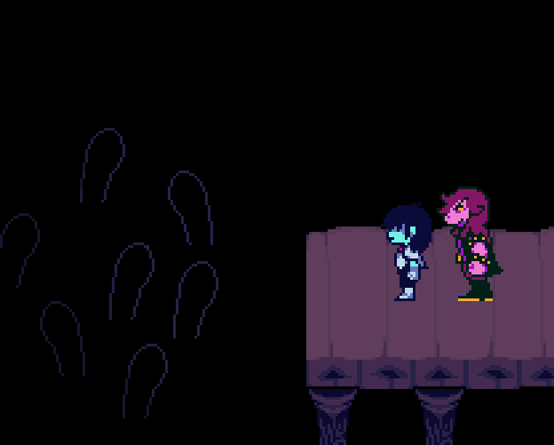

Поздравляем UNDERTALE с 9-летием! |
А это значит, что с 8-летия прошло лет... И лет с момента выхода игры.. |
И еще лет. |
К числу 9 это не имеет никакого отношения, но... |
В этом году Fangamer выпускает специальную линейку товаров, связанных с кухней!! Они сняли рекламный ролик для её продвижения! |
Вы можете использовать этот набор хоть каждый день. |
Я просил об этом.... |
Вы можете получить свою собственную странную, но милую Ториэль, которую можно использовать в качестве рукавицы! Она немного плоская, но, очевидно, если набить ее морду большим количеством пуха, это повысит ее воспламеняемость...* |
Не стесняйтесь использовать ее в качестве марионетки. На самом деле, это может быть её лучшим применением... |
*…Серьезно, мы рассматривали продукт другой компании : «голова персонажа в виде прихватки», и на самом деле, фактически это не прихватка. Знаете, потому что она слишком легковоспламеняющийся... |
Да-да! Наполните кружку молоком или другой непрозрачной жидкостью, выпейте ее... И найдите сидящую внутри собачку! |
Это была еще одна моя просьба... У меня в детстве была похожая чашка. Внизу было какое-то существо, и его невозможно увидеть, пока не выпьешь почти всё. |
Попробуйте подавать горячий шоколад или что-то в этом роде людям, которые никогда её не видели! Или используйте спрятавшуюся собаку в качестве мотиватора, чтобы заставить кого-то выпить какое-то ужасное лекарство. Поскольку неясно, имеет ли собака какое-либо представление о добре и зле, она не осознает последствий пользования ею. |
В качестве альтернативы вы можете наполнить стакан одним из тех шоколадных тортов, которые выглядят, как земля/грязь, и «раскопать» собаку маленькими ложками. ... Потом можно снова закопать... |
|
С этой тарелкой вы можете представить себя клиентом эксклюзивного кафе Papyrus Collaboration!! |
... Я не уверен, что еда на самом деле будет вкусной... |
Некоторые части прозрачны, поэтому разные жидкости окрашивают его глаз разными цветами! |
... Если, вы нальете что-то, кроме синего лимонада, он в превратится в AU-шную версию Санса... Пожалуйста, проявите ответственность. |
Это идеальное блюдце для приготовления вашего любимого десерта. |
Вы знаете о чем я, я говорю о Корично-ирисковом Пироге. |
Это было бы так вкусно, не приготовите для нас немного? |
Какой милый фартук! Легко понять, что в этом привлекательного... |
Хм, что говорите?! |
«Да, это ДЕЛЬТА РУНА с одежды Ториэль! Это всегда было моей мечтой носить одежду Ториэль!» |
Хм... Спасибо, truck-freak подписчик... Впрочем, вам не обязательно было так говорить. |

 |
Солонки и перечницы Санс и Папайрус! Они появятся в продаже в 2025 году. Эту идею подсказал"С&П"(Как Санс и Папайрус/Соль и Перец)... С точки зрения названий, это в некотором роде идеально.Everdraed. |
"С&П"(Как Санс и Папайрус/Соль и Перец)... С точки зрения названий, это в некотором роде идеально. |
В любом случае, у вас, возможно, уже есть солонки и перечницы, так что как насчет использования их для других типов порошков!? Например, приправу для чипсов со вкусом кетчупа от какой-нибудь канадской фабрики. Или сухое молоко. Или костную муку. Список отличных идей можно только продолжать. |
В прошлый раз я объяснил все, что осталось для выпуска глав 3 и 4. |
Если вы пропустили, информация здесь. |
Кстати, что касается тестирования главы 1+2 с новой функцией GameMaker - мы ждем, когда команда GameMaker поможет нам решить некоторые проблемы, с которыми мы столкнулись. Это займет немного больше времени, но... Когда все будет готово, мы сообщим всем об этом в официальном Твиттере UNDERTALE!! |
Прошел всего месяц (я пишу 3 сентября), но давайте вкратце вспомним, что было сделано за это время. |
 |
Как упоминалось ранее, основное содержание главы 3 было завершено некоторое время назад. |
Японский перевод главы 3 в настоящее время находится на стадии проверки. 8-4 (компания по локализации) внимательно изучает игру, чтобы определить, правильно ли все линии отображаются на японском языке. Этот процесс должен быть завершен к началу октября. |
Мы надеемся начать профессиональное тестирование версии для ПК в середине октября. |
Мы уложились в наш внутренний дедлайн для завершения основного содержания глав 3 и 4, который был 1 сентября. |
Таким образом, версия 4 главы для ПК практически завершена, за исключением некоторых исправлений ошибок и японской локализации. |
В настоящее время ведется работа над предварительным переводом главы 4. Я ожидаю, что этот первый проход будет завершен к тому времени, когда мы отправим следующий информационный бюллетень. После этого последуют дополнительные проходы, а затем проверка (как сейчас проходит глава 3). |
Кстати, еще несколько человек смогли поиграть в 4 главу. Я видел, как люди играют в нее уже 6 раз. Всем понравилось. Просматривая игру сейчас, она кажется действительно завершенной! |
 |
|
Все, кто не работают над локализацией, портированием консолей или исправлениями, теперь работают над 5 главой. Это будет основным направлением для нас в будущем. |
Я очень рад наблюдать за созданием этой главы! |

Что касается разработки глав 3 и 4, то я лично выполнил всё то, в чем мог непосредственно учавствовать. Теперь все, что мне остается сделать, это дождаться локализации и тестирования. |
... Дойти до этого момента, а потом ждать... такое ощущение, что я привязан к стулу возле вкуснях, которые находятся вне зоны моей досягаемости. |
Но они есть! Главы 3 и 4 реальны! Теперь это всего лишь вопрос времени! |
|

Хотя технически это годовщина АНДЕРТЕЙЛА, я считаю этот день также праздником ДЕЛЬТАРУНА. Извините, ребята, в этом году вам придется разделить вечеринку по случаю дня рождения... |
Поскольку прошло много времени с момента выхода главы 2, позвольте мне поделиться некоторыми материалами из ее разработки! Надеюсь, вам понравится! |
|

Большое спасибо всем, кто всё ещё читает эти письма. |
Эти письма счастливы, что их всё ещё читают |
А вы счастливы их читать? |
Вот вам письмо. Это другое письмо, но вы все равно можете его прочитать. |
... Но осчастливило ли вас прочитанное? |
До встречи и в этом году, и в следующем. |
Пока-пока. |